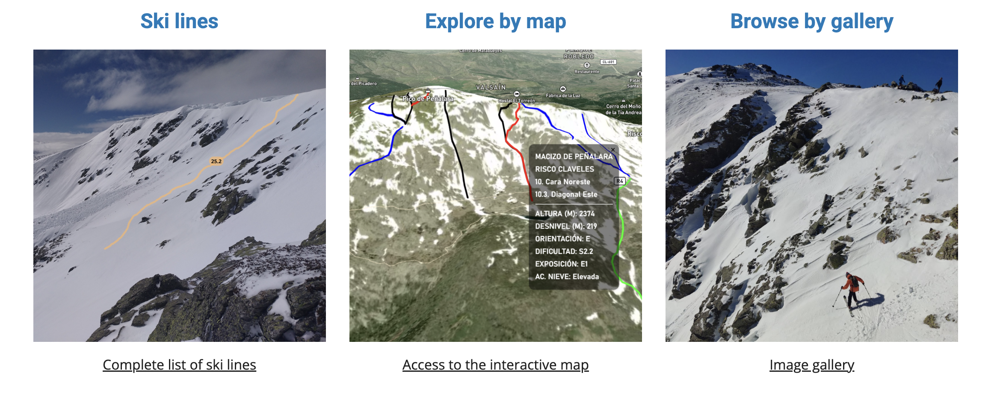
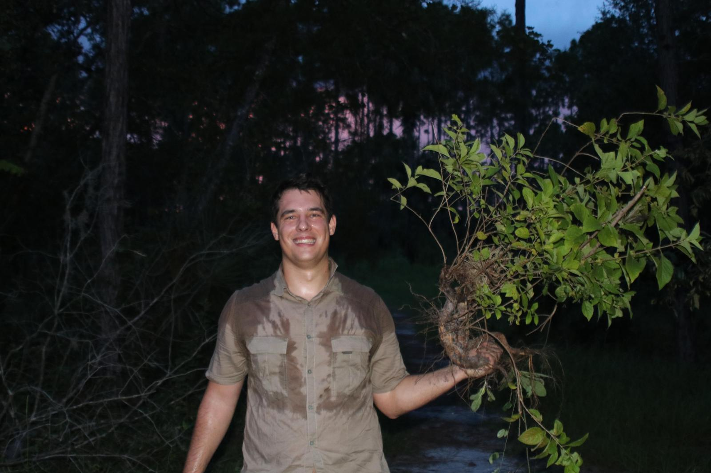
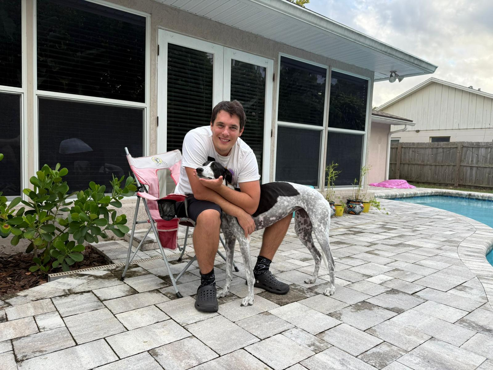

Investigando IA y teledetección para proteger la naturaleza, anticipar amenazas ambientales y generar un impacto positivo para el planeta y la sociedad.
Enfoque y Experiencia
Focus & Experience
Geoespacial & IA · Clasificación de hábitats, detección de erosión, análisis territorial a escala nacional, Sentinel & Landsat (GB a TB)
Geospatial & AI · Vegetation and ecosystem classification, erosion detection, national-scale territorial analysis, Sentinel & Landsat (GB to TB)
Cloud & MLOps · Pipelines multi-terabyte para investigación, entrenamiento reproducible, despliegue en producción
Ingeniería de Datos · Multi-source data mining a escala, trazabilidad de datos y experimentos, automatización end-to-end
Data Engineering · Multi-source data mining at scale, data and experiment traceability, end-to-end automation
Liderazgo · Equipos distribuidos, fundación de startup, producto de idea a producción, operaciones multinacionales
Leadership · Distributed teams, startup founding, concept to production, multinational operations
Proyectos Liderados
Lead Projects

Soil SaveR
Investigación & Open DataEstamos construyendo el primer dataset abierto y multirregión para detección de erosión con deep learning. Soil SaveR combina modelización física (RUSLE + DEM) con anotación humana guiada sobre imágenes Sentinel-2 para generar etiquetas fiables reduciendo el esfuerzo manual entre un 50 y 80%.

Darwin Maps
Plataforma GeoespacialPlataforma web geoespacial pensada para que cualquier organización pueda visualizar, analizar y actuar sobre datos territoriales sin necesidad de ser especialista en GIS. Convierte información compleja de satélite en capas visuales intuitivas con acceso controlado por organización.

Guadarrama Ski
Teledetección & ClimaMapa interactivo con más de 60 rutas de esquí de montaña documentadas en la Sierra de Guadarrama, incluyendo métricas de acumulación nival (2016-2024) a resolución de 10m/píxel usando datos de Sentinel y Landsat. Aplica teledetección y modelos digitales de elevación para ofrecer información nivológica que ayude a esquiadores a planificar rutas y entender cómo el cambio climático está transformando la cobertura nival.
Sobre Mí
About
Soy el fundador de darwingeospatial.com, donde lidero las operaciones del día a día de un equipo de cinco personas. Construimos productos como Darwin Maps y software end-to-end basado en IA para clientes de todo el mundo que trabajan con ciencia geoespacial. Lo que me ha movido durante los últimos cuatro años a construir una empresa es mi ambición por el conocimiento, la investigación y dejar una huella en la sociedad.
Antes de Darwin, pasé casi cuatro años en Brambles/CHEP, donde crecí por cuatro posiciones hasta dirigir el equipo de Financial Architecture Data Engineering en el Bay Area, liderando ingenieros, científicos y analistas de datos construyendo pipelines con Databricks y Spark para operaciones globales. Estudié Ingeniería del Medio Natural en la UPM (TFG con Matrícula de Honor), hice un Máster en la UCAV (Premio Mejor TFM de Castilla y León) y aprendí IA en la Universidad de Valencia. Actualmente curso mi doctorado en la UCAV, donde he procesado más de 20 TB en imágenes de satélite y entrenado modelos de visión por computador (CNN, ViT) para actualizar inventarios de cobertura terrestre de forma automática.
Mi objetivo es seguir investigando en IA, ciencia geoespacial y medio ambiente, y construir cosas que sirvan. Mi foco es que Darwin y mi investigación dejen huella: datos que ayuden a frenar la erosión, herramientas que ayuden a organizaciones a tomar mejores decisiones sobre su territorio, y ciencia que nos ayude a entender cómo están cambiando nuestro paisaje y nuestras montañas, siempre usando las matemáticas y la ingeniería como base. Eso es lo que me mueve.
Algunos datos curiosos sobre mí: tengo mi propio jardín y huerto, toco el piano, y he completado travesías de hasta 20 días por la naturaleza salvaje de Canadá. Las matemáticas y la ingeniería no son solo mi profesión, son la lente con la que interpreto el mundo. También disfruto leyendo sobre ingeniería de sistemas, macroeconomía, y conocer diferentes culturas.


Trayectoria
Career
Doctorado (PhD)
PhD
UCAV · 2023 – 2027
Investigando la aplicación de deep learning e imágenes de satélite a la clasificación de vegetación y ecosistemas y monitoreo ambiental.
Fundador, Darwin Geospatial
Founder, Darwin Geospatial
2025 –
Fundé Darwin para conectar lo que aprendí en la industria tech con lo que me importa: usar datos y tecnología al servicio del medio ambiente. Actualmente somos un equipo de 5 personas.
Brambles / CHEP
Asset Productivity Developer → Data Scientist → Data Engineering Lead
2021 – 2025 · 3 yrs 10 mos
Crecí dentro de la empresa pasando por tres roles, liderando el equipo de Data Engineering en el Bay Area y construyendo pipelines de datos a escala para operaciones globales.
Ingeniería del Medio Natural
Environmental & Natural Resources Engineering
Universidad Politécnica de Madrid (UPM)
Máster en Ingeniería de Recursos Naturales (UCAV). Inteligencia artificial (Universidad de Valencia).
Lo que dicen mis colegas
What colleagues say
"Gabriel es un científico de datos excepcional. Aporta gran entusiasmo y energía al equipo, con una actitud positiva y resolutiva, y es un placer trabajar con él tanto como compañero como reporte directo. Trae ideas sólidas y un impulso por añadir valor, y se involucra profundamente en entender los problemas de negocio y encontrar soluciones creativas que aprovechan los datos y técnicas avanzadas de data science."
Laurence Day
Data Science Lead, manager directo de Gabriel · 2024
"Tuve el placer de trabajar con Gabriel desde las etapas iniciales del desarrollo de nuestro equipo. Su rápida comprensión de nuestros problemas y sus soluciones técnicas tuvieron un impacto significativo. Gabriel es un autodidacta dedicado que rápidamente asumió el rol de nuestro líder técnico. Su experiencia, liderazgo y dedicación le convierten en un activo excepcional para cualquier equipo."
Mehdi Sabrah
Director, Desarrollo de Negocio & Alianzas Estratégicas · 2024
Reconocimientos
Awards
Premio Mejor Trabajo Fin de Máster, Castilla y León
Best MEng Thesis Award, Castilla y León
Colegio de Ingenieros de Montes (Sociedad Española de Ingeniería Forestal)
Matrícula de Honor, Trabajo Fin de Grado
Honours, Bachelor's Thesis
Universidad Politécnica de Madrid (UPM)
Investigación
Research
Mi investigación doctoral en la UCAV se centra en aplicar deep learning a imágenes de satélite para clasificación de vegetación y ecosistemas y monitoreo ambiental. Trabajos publicados hasta ahora:
Classification of protected grassland habitats using deep learning architectures on Sentinel-2 satellite imagery data
Díaz-Ireland, G., Gülçin, D., López-Sánchez, A., Pla, E., Burton, J., Velázquez, J.
International Journal of Applied Earth Observation and Geoinformation, 134, 104221 (2024)
Rol: Escritura (borrador original + revisión), Supervisión, Recursos, Metodología, Análisis formal, Conceptualización
Impacts of the Russian aggression on forest ecosystems in Ukraine and identification of key restoration areas to improve connectivity
Velázquez, J., Díaz-Ireland, G., Rincón, V., Özcan, A.U., et al.
Biodiversity and Conservation (2025)
¡Ey! Por si te los perdiste: darwingeospatial.com y Darwin Maps.